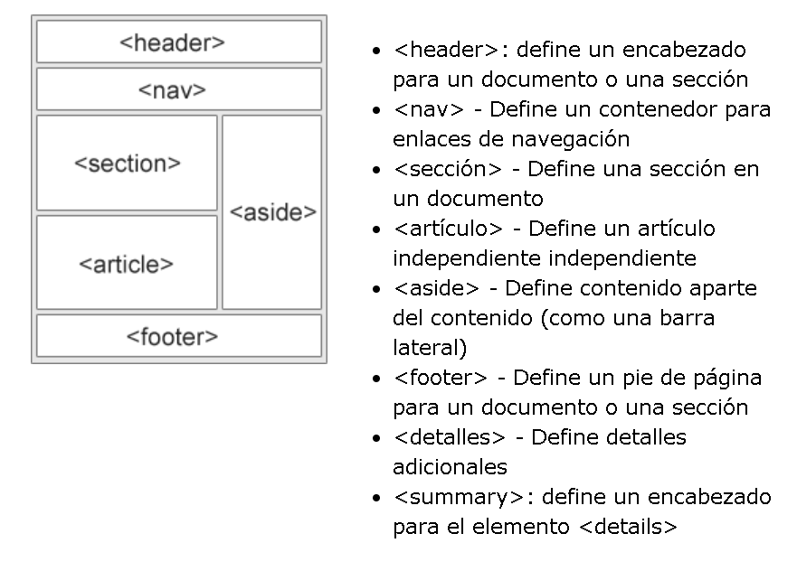

Los sitios web a menudo muestran contenido en varias columnas (como una revista o periódico). HTML ofrece varios elementos semánticos que definen las diferentes partes de una página web.
Hay cinco formas diferentes de crear diseños de varias columnas. Cada camino tiene sus pros y sus contras.
El elemento table no fue diseñado para ser una herramienta de diseño! El propósito del elemento es mostrar datos tabulares. Por lo tanto, ¡no use tablas para el diseño de su página! Traerán un desastre en su código. E imagine lo difícil que será rediseñar su sitio después de un par de meses.
Es común hacer diseños web completos utilizando la propiedad flotante CSS. El flotador es fácil de aprender: solo necesita recordar cómo funcionan el flotador y las propiedades claras. Desventajas: los elementos flotantes están vinculados al flujo de documentos, lo que puede dañar la flexibilidad.
Flexbox es un nuevo modo de diseño en CSS3. El uso de flexbox asegura que los elementos se comporten de manera predecible cuando el diseño de la página debe acomodar diferentes tamaños de pantalla y diferentes dispositivos de visualización. Desventajas: no funciona en IE10 y versiones anteriores.
El Módulo de diseño de cuadrícula CSS ofrece un sistema de diseño basado en cuadrícula, con filas y columnas, lo que facilita el diseño de páginas web sin tener que usar flotantes y posicionamiento. Desventajas: no funciona en IE ni en Edge 15 y versiones anteriores.
Responsive Web Design se trata de usar HTML y CSS para redimensionar, ocultar, reducir o ampliar automáticamente un sitio web, para que se vea bien en todos los dispositivos (computadoras de escritorio, tabletas y teléfonos). Una página web debería verse bien en cualquier dispositivo.
Al crear páginas web receptivas, agregue el meta elemento con el name viewport. Esto establecerá la ventana gráfica de su página, que le dará al navegador instrucciones sobre cómo controlar las dimensiones y la escala de la página.
Las imágenes receptivas son imágenes que se adaptan bien a cualquier tamaño de navegador.Si la width propiedad CSS se establece en 100%, la imagen responderá y se escalará hacia arriba y hacia abajo. La imagen se puede ampliar para que sea más grande que su tamaño original. Una solución mejor, en muchos casos, será utilizar la max-widthpropiedad en su lugar. Si la max-widthpropiedad se establece en 100%, la imagen se reducirá si es necesario, pero nunca se ampliará para ser mayor que su tamaño original.

El tamaño del texto se puede establecer con una unidad "vw", lo que significa el "ancho de la vista". De esa forma, el tamaño del texto seguirá el tamaño de la ventana del navegador. Viewport es el tamaño de la ventana del navegador. 1vw = 1% del ancho de la ventana gráfica. Si la ventana gráfica tiene 50 cm de ancho, 1vw mide 0.5 cm.
Además de cambiar el tamaño del texto y las imágenes, también es común usar consultas de medios en páginas web receptivas. Con las consultas de medios, puede definir estilos completamente diferentes para diferentes tamaños de navegador.
Hay muchos marcos CSS existentes que ofrecen diseño receptivo. Son gratis y fáciles de usar.
Una excelente manera de crear un diseño receptivo es utilizar una hoja de estilo receptiva, como W3.CSS
Otro marco popular es Bootstrap, usa HTML, CSS y jQuery para crear páginas web receptivas.